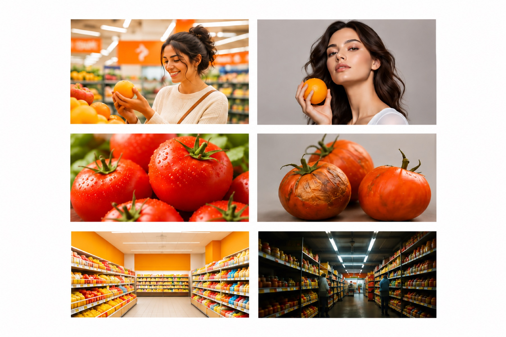
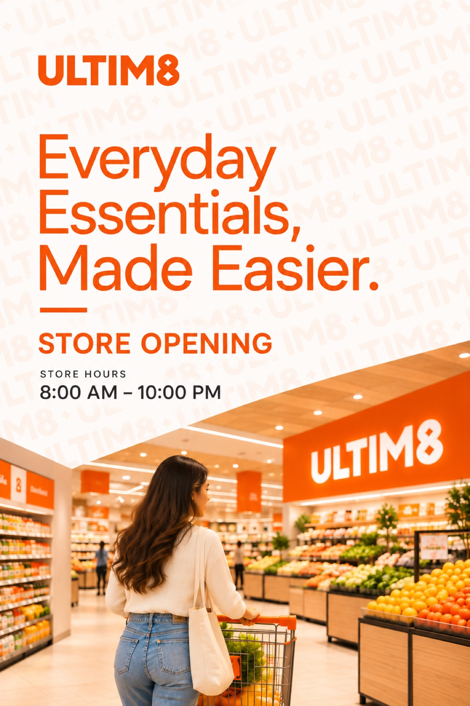

Secondary
Identity
Patterns
Mix
Pattern System
Our pattern system brings flexibility, personality, and consistency to ULTIM8’s visual identity. Each pattern serves a distinct purpose, helping us adapt our brand across different applications while maintaining a recognizable and cohesive look.
From everyday shopping bags to promotional campaigns, our patterns strengthen brand recognition, create visual interest, and support clear communication.
Pattern Categories
1. Logo Pattern: Strengthens brand recognition through repetition of our name.
2. Daimond Pattern: Extends our signature brand geometry into a recognizable visual texture.
3. Campaign Pattern: Introduces creative flexibility for specific campaigns while preserving brand consistency.
Pattern Rules
1. Brand name pattern: Use the approved wordmark artwork without altering its proportions or letterforms.
2. Diamond pattern: Preserve the approved diamond geometry and repeat structure.
3. Campaign patterns: Develop new variations using documented brand geometry, color, spacing, and repetition rules.
4. Hierarchy: Use one dominant pattern per composition rather than combining several competing patterns.
5. Legibility: Never allow decorative patterns to interfere with essential information.
6. Approval: New pattern families must be reviewed before becoming permanent brand assets.
Patterns
Mix
Logo Pattern
Our brand name pattern transforms the ULTIM8 wordmark into a recognizable visual element. Through repetition, it creates rhythm, reinforces our identity, and strengthens brand visibility across everyday applications.
Designed for high-visibility touchpoints, this pattern turns functional items such as grocery bags, merchandise, and packaging into opportunities for brand recognition beyond our store.
Usage Guide:
1. Use only our approved ULTIM8 wordmark.
2. Preserve the original typography, proportions, and spacing.
3. Maintain consistent repetition and alignment.
4. Use approved brand color combinations with sufficient contrast.
5. Adjust the overall pattern scale to suit the application without distorting individual wordmarks.
6. Avoid placing competing graphics or text over dense pattern areas.
Scale adjusts the whole pattern uniformly — individual wordmarks are never distorted (Usage Guide 5).
Patterns
Mix
Daimond Pattern
Our diamond pattern is inspired by the distinctive spark within the ULTIM8 logo, symbolizing intelligent guidance, clarity, and balance. By extending this familiar geometry into a repeating visual element, we create continuity between our logo and supporting brand communications.
The diamond pattern provides a recognizable background texture while maintaining the simplicity and visual clarity central to our shopping experience.
This pattern can be used for brochures, presentation layouts, in-store signage, digital communications, and supporting promotional graphics.
Usage Guide:
1. Preserve the approved diamond geometry and repeat structure.
2. Maintain consistent proportions, alignment, and spacing.
3. Use approved brand colors and background combinations.
4. Adjust scale and visual prominence according to the application.
5. Keep the pattern subtle when used behind important text or information.
6. Avoid distortion, overcrowding, or unapproved modifications.
Patterns
Mix
Campaign Pattern
Our campaign patterns introduce variety and personality into ULTIM8’s visual communications. They allow us to explore new compositions for seasonal promotions, special events, and marketing campaigns while remaining connected to our established brand identity.
Unlike our permanent patterns, campaign patterns are flexible visual expressions developed for specific communication needs. They bring freshness to our designs without compromising brand recognition or clarity.
This can be used in seasonal campaigns, promotional offers, social media graphics, and special events.
Usage Guide:
1. Develop variations using our approved visual principles, geometry, and color palette.
2. Maintain a recognizable connection to the ULTIM8 identity.
3. Adapt the pattern’s scale, repetition, and composition to the campaign’s purpose.
4. Ensure patterns complement typography, imagery, and promotional messages.
5. Avoid introducing unrelated visual styles or excessive decorative details.
6. Review and approve new campaign patterns before use.
Icons
Bites
Our icons are designed to make everyday shopping simpler, clearer, and more intuitive. Using a consistent outline style, rounded forms, and minimal details, they communicate information quickly while maintaining our friendly and approachable brand personality.
The curves, straight bars, and geometric forms of our icons are inspired by Pacaembu, our primary brand typeface, creating a visual connection between our typography and iconography. Consistent stroke weights, balanced proportions, and recognizable shapes ensure clarity across physical and digital touchpoints.
Our icon system represents shopping essentials, product categories, services, and accessibility. Together, these elements reduce visual clutter, support intuitive navigation, and create a cohesive brand experience.
Built from Pacaembu: 8, C and I
Layout
Recipe
Margins
Rule 1 - Consistent Spacing
Set margins by dividing the longest side of the layout by 20. Use this measurement consistently on all four sides to create balanced spacing and a clear content area.
Rule 2 - Optical Adjustment
Margins may be adjusted slightly for unusually wide, narrow, or small formats. Always maintain enough breathing room to keep content readable and visually balanced.
Columns
Rule 1 - Flexible Grid
Organize content using a grid of 3, 6, 9 or 12 columns, depending on the size and complexity of the layout.
Rule 2 - Clear Alignment
Align text, images, and graphic elements to the column grid. Use fewer columns for simple compositions and more columns for information-heavy layouts.
Gutters
Rule 1 - Proportional Spacing
Set gutters between 50% and 100% of the margin width. Use 50% as the standard starting point to maintain consistent spacing between columns..
Picture
Picks
Our imagery reflects the warmth, freshness, and simplicity of everyday shopping. We use authentic, welcoming visuals that create clarity and connect with our customers.
Usage Rules:
1. Lighting & Color
Use bright, natural lighting and warm, realistic colors. Avoid excessive filters and saturation.
2. Composition & Focus
Keep compositions clean, with clear focal points and minimal distractions.
3. People & Lifestyle
Show diverse, relatable people and genuine everyday shopping experiences.
4. Product Photography
Highlight freshness, quality, and affordability through clear, appetizing product imagery.
5. Cropping & Placement
Crop thoughtfully, preserve important details, and allow negative space for text.
6. Graphic Integration
Use approved brand colors and graphic elements without overwhelming the imagery.
Pick the right image
Round 1 of 3 — tap the photo that follows our rules.

Assets
Beauty
Combining & Applying Brand Assets
Our brand assets work together to create a cohesive, recognizable, and welcoming ULTIM8 experience. By combining our logo, typography, colors, patterns, graphics, and photography thoughtfully, we maintain visual consistency while allowing flexibility across different applications.
- 01.Establish a clear order of information using typography, scale, color, and spacing. Always prioritize the main message and call to action.
- 02.Use approved logo variations with sufficient clear space and contrast. Never overlap the logo with patterns, photography, or decorative graphics.
- 03.Follow our 60–30–10 color distribution to maintain consistency. Use primary colors prominently, secondary colors for support, and accent colors sparingly.
- 04.Use Pacaembu and our established grid system to maintain consistent alignment, spacing, and readability across applications.
- 05.Use one dominant pattern per composition. Balance expressive graphics with sufficient negative space to prevent visual clutter.
- 06.Combine imagery with approved brand elements while maintaining clear focal points, natural colors, and readable text.
- 07.Adapt compositions to suit print, digital, packaging, and environmental applications without altering the core brand identity.
